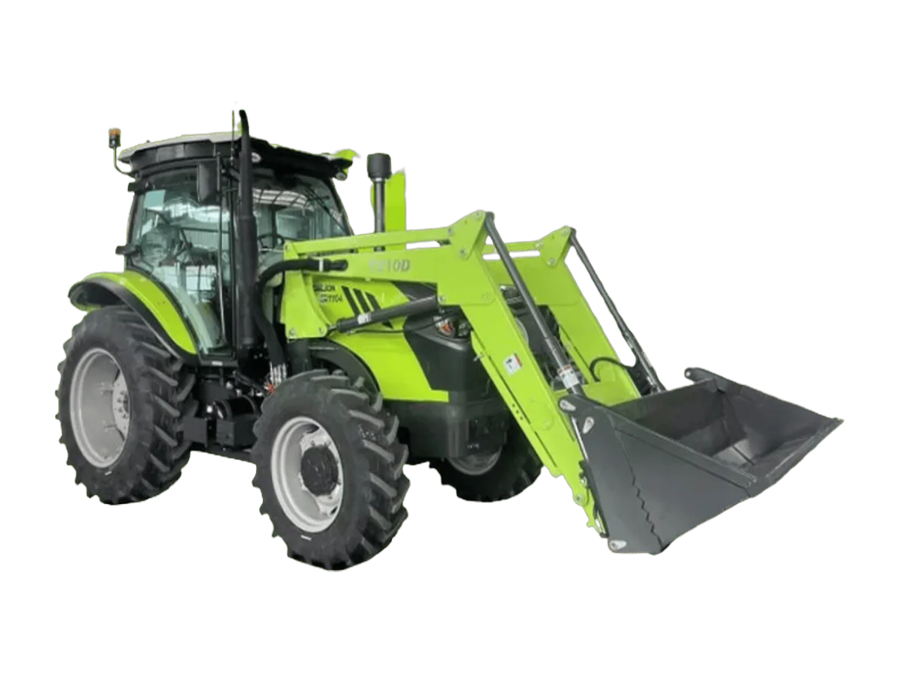

Traktor
Zoomlion CN1104
Traktor serbaguna yang dirancang untuk persiapan lahan, penanaman, dan pengangkutan di lingkungan pertanian lahan datar. Ideal untuk aplikasi yang membutuhkan keluaran hidrolik berkelanjutan, kompatibel dengan bajak 5 alur dan grain drill 20 baris (jarak baris 12,5 cm)
Keunggulan
- Performa lapangan unggul: mesin bertorsi tinggi dengan cadangan torsi 57%, sistem hidrolik berkapasitas angkat 30 kN yang diukur 610 mm di belakang hitch, dan pompa hidrolik 60 L/min
- Manuver lincah: transmisi power shuttle 12F+12R dengan performa setara traktor merek Eropa dan Amerika Utara
- Jarak terendah ke tanah 400 mm dengan kecepatan angkut maksimum 39,9 km/jam
- Tangki bahan bakar berkapasitas besar 200 L meminimalkan gangguan pengisian ulang dan meningkatkan efisiensi operasional
- Kenyamanan operator: kabin premium dengan kursi bersuspensi mewah, dilengkapi paket pencahayaan empat lampu depan dan dua lampu belakang untuk visibilitas malam hari
Spesifikasi
| Model Mesin | SC4H115.9G5E |
|---|---|
| Tipe Mesin | 4 Silinder, Common Rail, Turbo Intercooled |
| Cadangan Torsi | 57% |
| Kapasitas Tangki BBM | 200 L |
| Transmisi | Synchronizer Shuttle Shift |
| Konfigurasi Gigi | 12F+12R |
| Kecepatan | 3,23–39,9 km/jam (maju) / 2,92–36,2 km/jam (mundur) |
| Radius Putar Minimum | 4,6 ± 0,5 m |
| Aliran Hidrolik | 60 L/min |
| Hydraulic Output | 3 Groups |
| Hitch | Rear Three-Point Hitch, Category 2 |
| Kapasitas Angkat Maksimum | 30 kN |
| PTO | 540 / 540E rpm |
| Sistem Rem | Dual-Circuit Air Brake |
| Berat Operasi Maksimum | 6.680 kg |
| Dimensi | 4.830 × 2.300 × 2.970 mm |
| Jarak Sumbu Roda | 2.380 mm |
| Lebar Jejak Roda | 1.725 / 1.750 mm |
| Jarak Rendah Ketanah | 400 mm |
| Ukuran Ban | 340/85R24 (depan) / 420/85R34 (belakang) |
Tanya harga & ketersediaan unit
Tim kami siap membantu memilih unit yang sesuai kebutuhan lahan Anda.